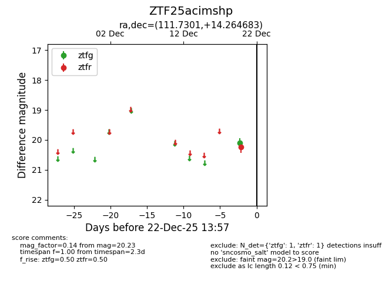
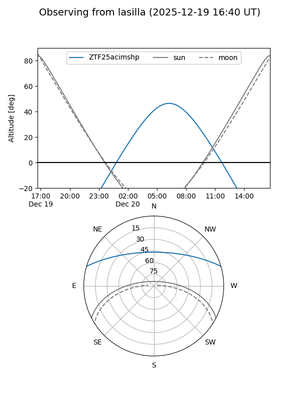
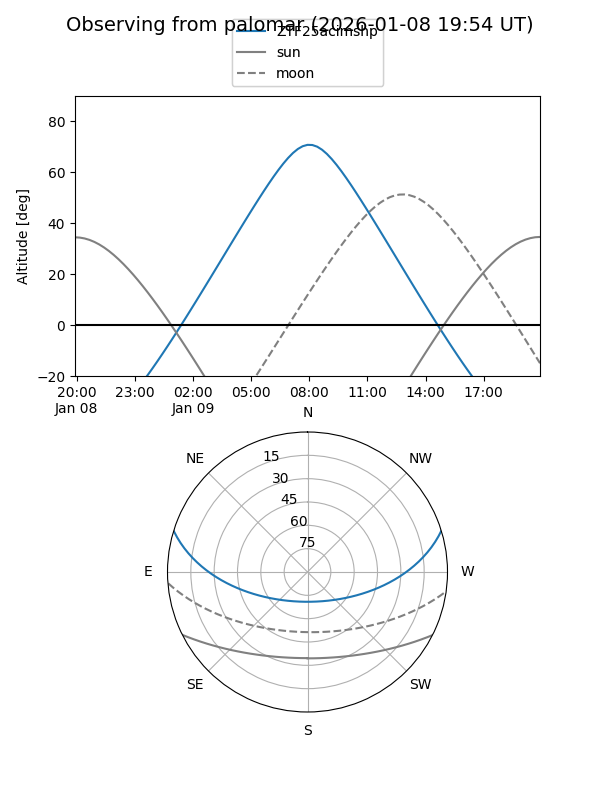
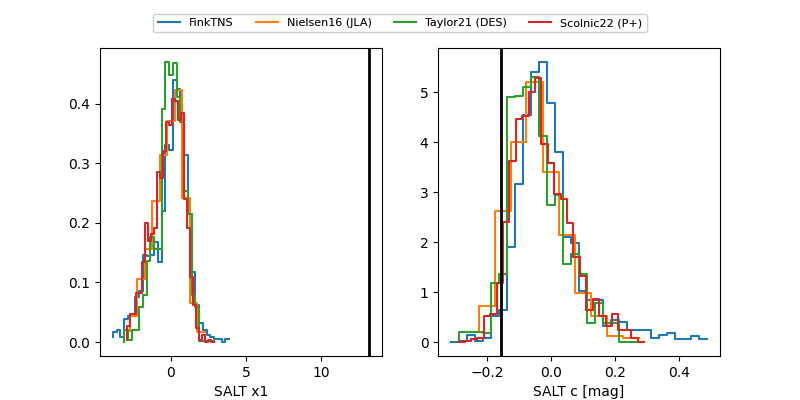

ZTF25acimshp
Target ZTF25acimshp at 2025-12-31 18:00
Aliases and brokers:
FINK: link
Lasair: link
ALeRCE: link
alt names
ZTF25acimshp (ztf,fink_ztf)
Coordinates:
equatorial (ra, dec) = 111.7301,+14.26468
equatorial (HMS+DMS) = 07:26:55.23,+14:15:52.86
galactic (l, b) = (203.9621,+14.20334)
Flags:
Photometry:
last ztfg=20.10, ztfr=20.26
1 ztfg, 2 ztfr detections
Lightcurve

Visibility


Additional plots
